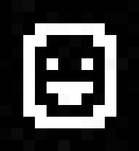

-
Email (preferred): urmas@urist.ee
-
Matrix: @u.rist:matrix.org
-
GPG key

Projects
-
SaunaFS
Distributed POSIX filesystem using FUSE/C++. My
pride and joy that I maintained when I
worked at Leil Storage. Go check it out!
-
forum
Student project at kood/Jõhvi that I
worked on with others. This was one of
the funnest projects I worked on there
CV
Professional summary
Results-driven Software Engineer with expertise
in distributed systems, systems programming,
and open-source development. Was lead developer and
maintainer of SaunaFS, an open-source
distributed POSIX filesystem serving production
workloads. Proven track record of designing
CI/CD pipelines, optimizing testing
infrastructure (87.5% runtime reduction), and
delivering near-monthly releases. Skilled in
C++, Go, Rust, and Python with deep Linux
systems knowledge and a passion for building
reliable, high-performance software.
TECHNICAL SKILLS
Languages
Go, C++, Bash, Python, C, Rust, JavaScript, C#
Systems & Infrastructure
Linux/Unix, distributed filesystems, Docker
(including Docker API), Proxmox, system
administration
DevOps & CI/CD
Jenkins, GitHub Actions, automated testing,
Debian/Ubuntu packaging Web Development: REST APIs,
SQL-backed CRUD applications, React, Vue, Go &
JavaScript backends Other: Monitoring systems,
Web Development
REST APIs,
SQL-backed CRUD applications, React, Vue, Go &
JavaScript backends
Other:
Monitoring systems, internal tooling & automation,
API/protocol design, cybersecurity
PROFESSIONAL EXPERIENCE
Software Engineer / Maintainer 2023 – 2026 Leil Storage
-
Serve as maintainer and lead developer of
SaunaFS, an open-source distributed C++ POSIX
filesystem (fork of LizardFS), driving
architecture decisions and long-term
roadmap
-
Led the open-sourcing process and managed
approximately 20 releases with near-monthly
cadence, ensuring quality and stability for
production users
-
Developed a parallel testing tool that reduced full
test suite runtime from 16 hours to 2 hours —
an 87.5% reduction — dramatically accelerating
development velocity
-
Designed and implemented CI/CD pipelines using
Jenkins and GitHub Actions for SaunaFS and
internal projects, ensuring continuous
integration and delivery
-
Built a high-performance changelog analysis tool in
Rust to measure filesystem operations per
second and file read/write throughput
-
Re-implemented the full monitoring stack and
created a REST API for SaunaFS, leveraging
Gemini AI to accelerate development
-
Implemented new filesystem features and resolved
critical production bugs in C++, improving
system reliability
-
Fixed and enhanced the Bash testing framework,
triaging and repairing numerous flaky and
broken tests
-
Documented the SaunaFS API comprehensively and
enforced API stability guarantees
-
Created and submitted Debian and Ubuntu packages
accepted into official distribution
repositories
-
Managed Linux infrastructure and dogfooded SaunaFS
in CI environments to surface real-world issues
early
-
Mentored an intern on distributed filesystem
development and Linux packaging best
practices
EDUCATION
Software Development Program 2021 – 2023 kood/Jõhvi
-
Completed intensive programs in Go,
JavaScript, and Cybersecurity
-
Developed web backends in Go and
frontends in JavaScript (forums,
social networks)
-
Completed an accelerated 4-week Rust
sprint program
-
Created and maintained a community
knowledge-sharing wiki
AWARDS & ADDITIONAL EXPERIENCE
-
Cybersecurity Finalist, Cyber Battle
of Estonia (2021 and 2022)
-
Frontend Development experience with
React and Vue frameworks
-
Open-Source Contributor — Maintained
and developed SaunaFS, a distributed
filesystem used in production
environments